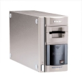

器材库 > 底片扫描仪 > Coolscan IV ED

详细规格
发布日期
2001
可支持的胶片格式
35mm：正片及负片、IX240：正片及负片
光源
RGB和D-LED阵列
光学分辨率
2900dpi
扫描位深
A/D转换：红绿蓝每通道各为12位；输出：每通道各为16位或8位（用户选择）
密度范围
3.6
扫描速度
[35mm] 42秒/2900dpi，8位输出(典型扫描时间连显示,连窗口作业,连色彩管理系统关闭)
有效扫描区域
25.1 x 38.0 mm
对焦
自动对焦, 手动对焦
接口
USB 1.1
电源要求
100-240V AC, 0.3-0.2A, 50/60Hz
尺寸
93 x 169 x 315mm
重量
3kg
因非子2010-02-03 13:044.5 分
操作性 4.50功能性 4.50美观性 5.00趣味性 4.00耐用性 4.50性价比 4.00解像力 4.50色彩还原 5.00
nowgoodboy22004-11-29 11:294.56 分
操作性 4.00功能性 4.50美观性 4.50趣味性 4.50耐用性 4.50性价比 5.00解像力 4.50色彩还原 5.00
钢牙崽2004-09-01 23:393.56 分
操作性 3.50功能性 4.00美观性 4.00趣味性 3.50耐用性 3.50性价比 4.00解像力 3.00色彩还原 3.00
yeoman2004-08-31 18:004.13 分
操作性 4.50功能性 4.50美观性 4.00趣味性 4.50耐用性 4.00性价比 3.50解像力 4.00色彩还原 4.00
chairman2004-02-08 18:504.19 分
操作性 4.00功能性 4.50美观性 4.00趣味性 3.50耐用性 4.50性价比 4.00解像力 4.50色彩还原 4.50
业余泡菜2003-07-02 09:284.75 分
操作性 5.00功能性 5.00美观性 5.00趣味性 5.00耐用性 4.00性价比 4.50解像力 4.50色彩还原 5.00
SamFan2003-05-07 19:354.75 分
操作性 4.50功能性 5.00美观性 5.00趣味性 5.00耐用性 5.00性价比 4.50解像力 4.50色彩还原 4.50
wd_hui2002-11-30 21:234.69 分
操作性 5.00功能性 4.50美观性 4.50趣味性 4.50耐用性 5.00性价比 5.00解像力 4.50色彩还原 4.50
DUMBO1232002-11-29 21:554.44 分
操作性 5.00功能性 5.00美观性 4.00趣味性 4.00耐用性 5.00性价比 4.00解像力 4.50色彩还原 4.00
建筑2002-05-02 21:423.75 分
操作性 2.50功能性 4.00美观性 4.00趣味性 5.00耐用性 2.50性价比 5.00解像力 3.00色彩还原 4.00
Ansel2002-04-26 10:224.25 分
操作性 4.00功能性 4.50美观性 4.00趣味性 4.00耐用性 4.00性价比 4.50解像力 4.50色彩还原 4.50
产品图 / 样片
尼康 Coolscan IV ED
评测 / 相关文章
该产品暂无存档的评测文章